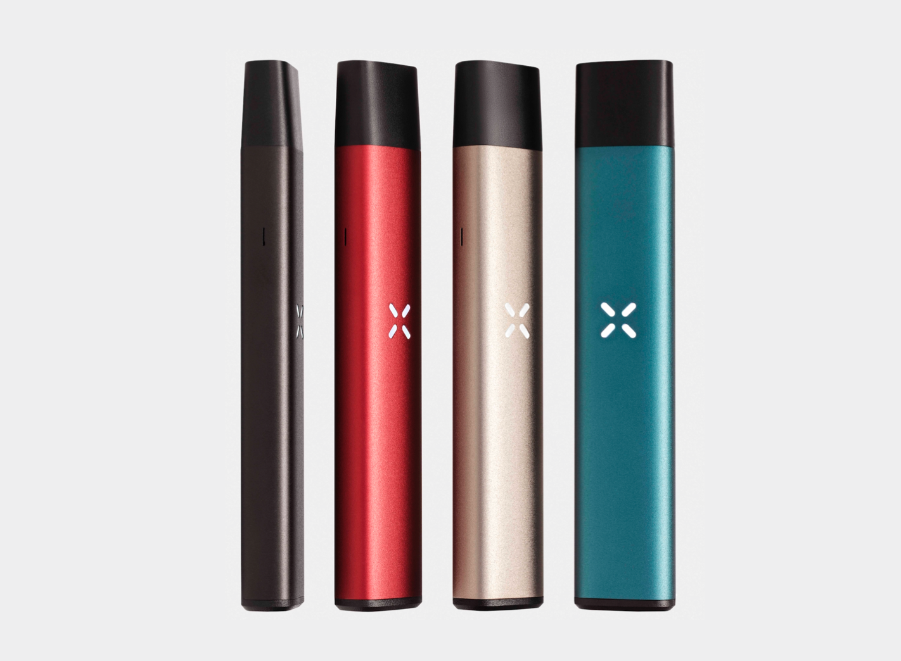
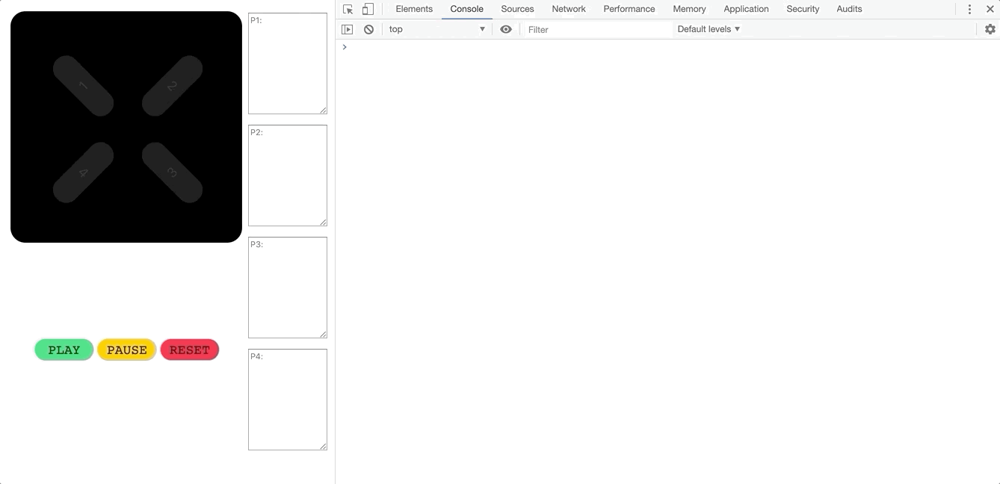

Designing animated petal interactions at PAX Labs
PAX Labs makes premium cannabis vaporizers that communicate with users through a four-petal LED interface. From battery level and temperature to consumption tracking, a language of colorful animations and haptic feedback provides users with information relevant to their cannabis experience.
My work at PAX involved creating a consistent animation language for the Era Pro concentrate device, refining Era Pro's animation set, and building a digital prototyping tool used to design and visualize animations in the browser.
The process
When I began working with PAX, they initially needed someone to rebuild from scratch the animation and UX spec docs for Era Pro. I worked heavily with the firmware team in this stage, developing a detailed technical understanding of animations, device sensors, and interaction logic.
Armed with this understanding of how the device worked at a low level, I created what I called frame code: a minimal set of variables that could precisely define animations, save for a few wild exceptions. From there, I abstracted upwards to create fresh documentation that was accurate, consistent, and comprehensible both by project managers and of course, firmware engineers.
Eventually, I used this same system of frame code to build a browser-based prototyping tool that could precisely visualize existing or proposed animations just as they would appear on the actual device.
This meant that project managers and myself could now work out exactly which designs we wanted, instead of PMs constantly going to firmware and saying things like “Actually, can you make that swirl faster...but more flowy?"
This prototyping tool, which I named PetalType, proved useful even outside of the development process. I used it to produce animation GIFs and create a company-wide document detailing the current build’s user interactions and what each corresponding animation was supposed to look like. If it didn’t look like that, then file a bug.
Towards the launch of Era Pro, I authored the final user guide explaining Era Pro’s many animations and interactions to consumers.